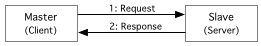
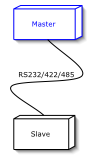
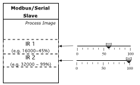
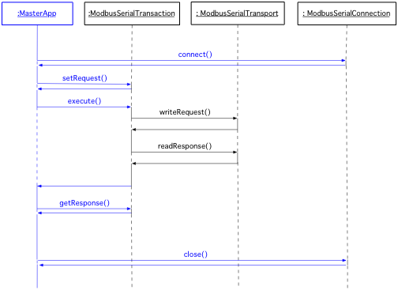

Serial Master HOW-TO
- About
- What is a Master?
- What is an Input Register?
- Classes of Interest for the Developer
- Implementation
About
This document is a tutorial for writing Modbus/Serial Master applications utilizing
the jamod library. It explains the basics and walk's you through
a simple command line Master implementation, that will allow you to read the state
of one or more input registers from a slave on the network.
If you are new to Modbus, it is highly recommended to first take a look at "Understanding
the Protocol" (especially the section about the Serial implementation) as well as the actual protocol specifications.
What is a Master?
Thinking in terms of the Client-Server network computing paradigm, the Master
application is a client. It establishes a connection with
the slave (i.e. the server) and uses this connection for sending
a Request to the slave, from which a Response will be received.
As described in Understanding the Protocol,
each cycle of Request and Response is called a Transaction.
Figure 1 shows a simple graphical representation of such a cycle:
Figure 1: Modbus Transaction
|

|
In case of the serial implementation, the communication can be point-to-point
(RS232, 422, 485) or on a shared signal cable (RS 485). In both cases there should
be only one master, that acquires data from a source (data acquisition), or writes
data to a sink (device control).
A possible simple "network setup" for this tutorial is composed of two
nodes, as depicted in Figure 2.
Figure 2: Network Setup
|

|
What is an Input Register?
According to the Modbus data model, which is part of the protocol specification (see section 4.3), an Input Register is a 16 bit word "data item", which is usually provided by an I/O system (analog input module). Figure 3 shows an example with simple switches that are mapped into the slave's process image in form of discrete inputs. The example master application will be capable of obtaining the state of these DI's from the slave.
Figure 3: Slave with IR's
|

|
Classes of Interest for the Developer
The motivation for creating jamod was to achieve an intuitive and object oriented implementation of the protocol, in a way, that there is a natural mapping from the domain knowledge (i.e. Modbus protocol) to the abstract class model. The important elements in the description above (What is a Master?) have been highlighted and the following list represents the mapping between them and the classes from jamod that will be needed for a master implementation:
- Connection: SerialConnection
- Transaction: ModbusSerialTransaction
- Request: ModbusRequest (respectively it's direct known subclass ReadInputRegistersRequest)
- Response: ModbusResponse (respectively it's direct known subclass ReadInputRegistersResponse)
- Parameters: SerialParameters
Implementation
As the idea is to provide a tutorial in form of a very simple command line example, it will consist of only one class and most of the work will be done in the entry method (public static void main(String args[])). This is probably not the way jamod will be usually employed in OO designs, but we hope it serves the demonstrative purpose.
Before we start with coding, let's take a look at the simplified interaction diagram of the application, given as Figure 4. The part most interesting for this tutorial is colored blue, but note that the diagram also contains a little bit of the things that happen behind the scenes (i.e. within the Transport, with writeRequest() and readRequest()), which are there to give a more complete picture.
Figure 4: Simplified Master Interaction Diagram
|

|
Now let's start writing code. We need a simple Java application skeleton, with imports of all jamod packages:
import java.net.*;
import java.io.*;
import net.wimpi.modbus.*;
import net.wimpi.modbus.msg.*;
import net.wimpi.modbus.io.*;
import net.wimpi.modbus.net.*;
import net.wimpi.modbus.util.*;
public class SerialAITest {
public static void main(String[] args) {
try {
...
...
} catch (Exception ex) {
ex.printStackTrace();
}
}//main
}//class SerialAITest
Next we add the instances and variables the application will need:
/* The important instances of the classes mentioned before */ SerialConnection con = null; //the connection ModbuSerialTransaction trans = null; //the transaction ReadInputRegistersRequest req = null; //the request ReadInputRegistersResponse res = null; //the response /* Variables for storing the parameters */ String portname= null; //the name of the serial port to be used int unitid = 0; //the unit identifier we will be talking to int ref = 0; //the reference, where to start reading from int count = 0; //the count of IR's to read int repeat = 1; //a loop for repeating the transaction
Next the application needs to read in the parameters:
- <portname [String]> as String into portname
- <Unit Address [int8]> as String into unitid
- <register [int16]> as int into ref
- <wordcount [int16]> as int into count
- {<repeat [int]>} as int into repeat, 1 by default (optional)
//1. Setup the parameters
if (args.length < 4) {
System.exit(1);
} else {
try {
portname = args[0];
unitid = Integer.parseInt(args[1]);
ref = Integer.parseInt(args[2]);
count = Integer.parseInt(args[3]);
if (args.length == 5) {
repeat = Integer.parseInt(args[4]);
}
} catch (Exception ex) {
ex.printStackTrace();
System.exit(1);
}
}
These will be used subsequently to setup the connection and the request. First, however, we need to set the identifier of the Master on the serial network (in this case to 1), as well as the parameters for the connection:
//2. Set master identifier
ModbusCoupler.createModbusCoupler(null);
ModbusCoupler.getReference().setUnitID(1);
//3. Setup serial parameters
SerialParameters params = new SerialParameters();
params.setPortName(portname);
params.setBaudRate(9600);
params.setDatabits(8);
params.setParity("None");
params.setStopbits(1);
params.setEncoding("ascii");
params.setEcho(false);
Once the parameters are prepared, we can open the connection (in this case the serial port will be openend) as well as prepare a request and a transaction:
//4. Open the connection
con = new SerialConnection(params);
con.open();
//5. Prepare a request
req = new ReadInputRegistersRequest(ref, count);
req.setUnitID(unitid);
req.setHeadless();
//6. Prepare a transaction
trans = new ModbusSerialTransaction(con);
trans.setRequest(req);
No we are ready for action. The last part is executing the prepared transaction the given (repeat) number of times and then for cleanup, close the connection:
//7. Execute the transaction repeat times
int k = 0;
do {
trans.execute();
res = (ReadInputRegistersResponse) trans.getResponse();
for (int n = 0; n < res.getWordCount(); n++) {
System.out.println("Word " + n + "=" + res.getRegisterValue(n));
}
k++;
} while (k < repeat);
//8. Close the connection
con.close();
That's it. This should do the job if the serial connection is established and the parameters are set accordingly for Master and Slave.
by Dieter Wimberger